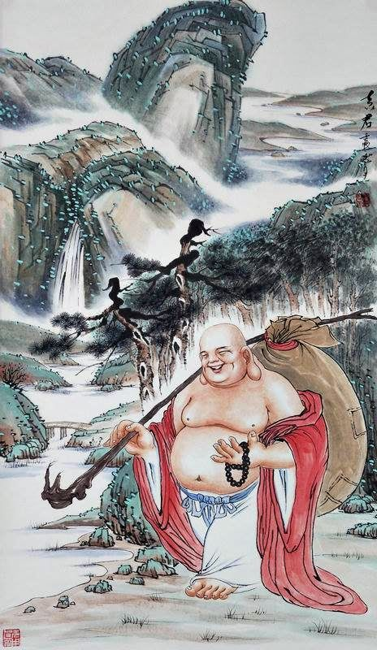
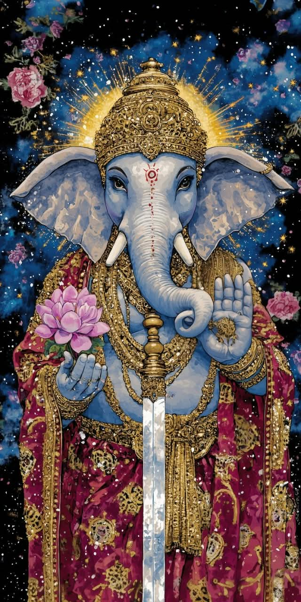
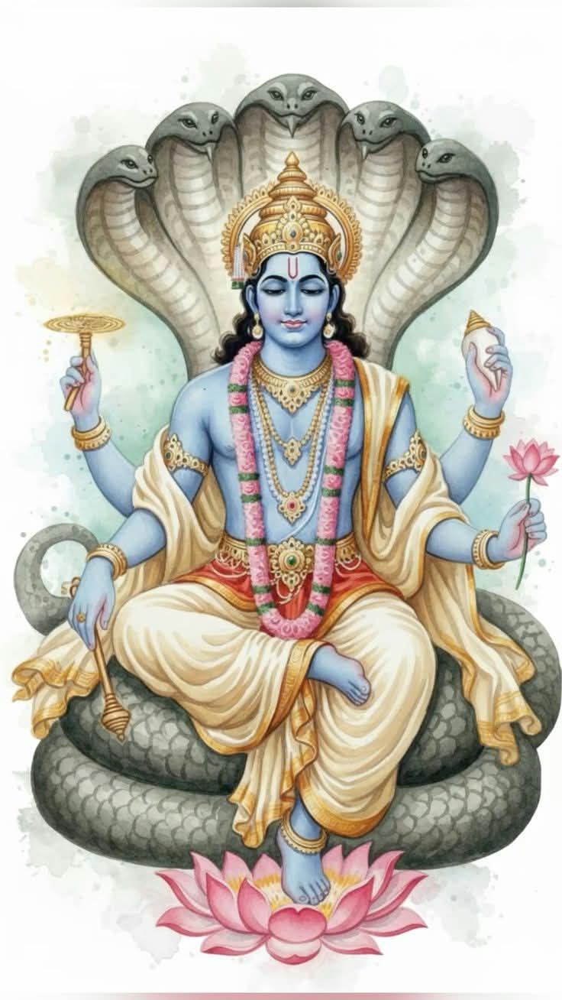
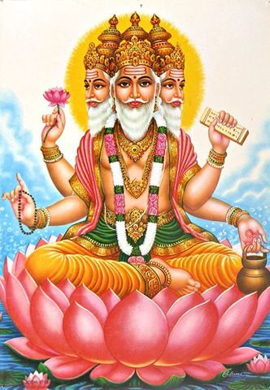
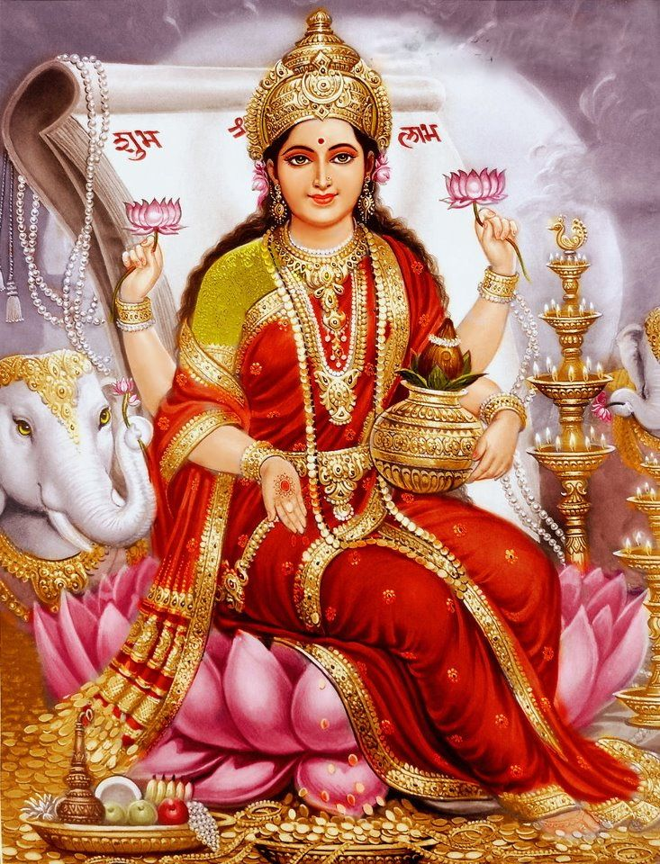
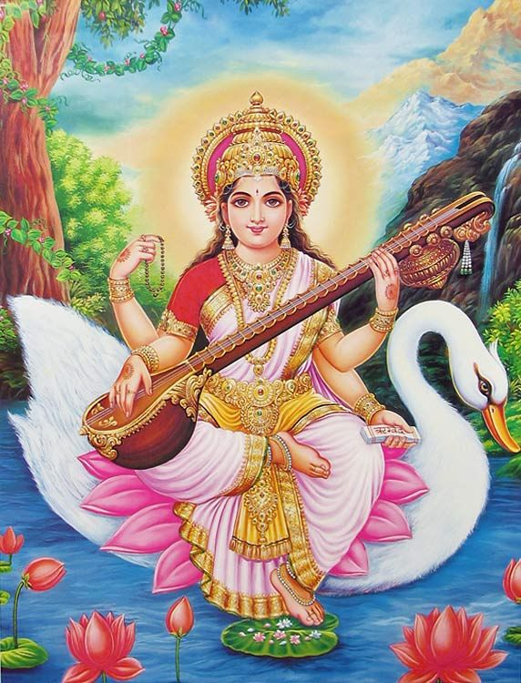

01
Buda
Siddhartha Gautama, conocido como Buda, fue un maestro espiritual cuyas enseñanzas dieron origen al budismo.
CULTURA Y ESPIRITUALIDAD
Un recorrido por algunas de las figuras más conocidas de la cultura y las tradiciones de la India.
Explorar ✦La cultura de la India posee una gran diversidad de tradiciones, símbolos y figuras espirituales. En esta página podemos conocer algunas de las más representativas y descubrir brevemente qué significan y cómo son representadas.
FIGURAS DESTACADAS
Siddhartha Gautama, conocido como Buda, fue un maestro espiritual cuyas enseñanzas dieron origen al budismo.

Bu Dai es una figura tradicional del budismo chino, conocida por su apariencia alegre y su gran sonrisa.

Ganesha es una de las deidades más reconocidas del hinduismo y se caracteriza por su cabeza de elefante.

Kali es una importante diosa del hinduismo, relacionada con el tiempo, la transformación y la destrucción de lo negativo.
GALERÍA

Una de las principales deidades del hinduismo.

Asociado con la preservación y protección.

Relacionado tradicionalmente con la creación.

Asociada con la prosperidad y la buena fortuna.

Relacionada con el conocimiento y las artes.

Una importante diosa de la tradición hinduista.
Conocé el significado de los elementos que representa cada figura.


Esta página fue creada como proyecto escolar para aprender cómo funciona una página web y cómo se relacionan elementos como HTML, CSS, JavaScript, navegador, servidor y localhost.
El contenido presenta información general sobre algunas figuras relacionadas con las tradiciones budistas e hinduistas.